This guide applies to the Chicago Region and is not complete for other regions.
Guide to Fungi of the Chicago Region
Use the Family Index and Genus Index to see alphabetical lists of included fungi. At the top of the page you can Search for fungi by name.
This guide is written for the known fungi of the Chicago Region, that is northeastern Illinois, northwestern Indiana, southeastern Wisconsin, and the southwest corner of Michigan. It does not cover additional mushrooms and fungi found in other parts of these states, particularly species found in more northern or more southern forests.
Choose a group below to start. Groups are separated based on their shape and the kind of structure that produces the spores. Not color. Some groups are mostly restricted to growing on the ground and others to growing on wood. In this key, mushrooms are generally thought of as having a distinct stem and cap (with a top and underside) and they are also fleshy fungi (soft to firm) that are short-lived (lasting a day or a week). Mushrooms in certain groups may have a short stem or a stem attached to the side of the cap. Some gilled mushrooms don't have a stem. Additional fleshy fungi have other growth forms listed below, such as puffballs, stinkhorns, and jelly fungi. Other longer-lived fungi tend to be tougher, leathery, or hard.
| Key Choice | ||
|---|---|---|
Division BasidiomycotaThe following groups of fungi have spores produced on outside of a basidium (reproductive cell). |
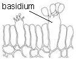 | |
| 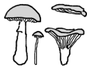 |
Gilled mushrooms, the agaricsCap has gills underneath. Gills may attach to the stem or run down the stem but the gills are not shallow ridges (if so, then see chanterelles below). Fleshy fungi with cap and stem. Stem may be short, lateral, or absent. Growing anywhere. If stem absent AND fungus is leathery to woody, and growing on wood, then see pored brackets below. |
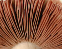 |
| 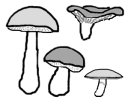 |
Pored mushrooms, the boletesCap has pores or tubes underneath. Pores can be round, angular, or radially elongated. Fleshy fungi with cap and stem. Stem may be short or off-center. Growing on the ground, rarely on rotted wood. If stem absent, then see pored brackets below. |
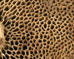 |
| 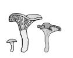 |
Chanterelles and trumpetsCap undersurface has ridges or wrinkles or is smooth. Ridges can have cross-veins. Fleshy fungi with cap and stem. Stem may be short. Growing on the ground, rarely on rotted wood. If stem absent or if growing on wood, then see crust fungi below. |
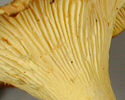 |
Toothed fungi, the hydnumsFungi with spines or teeth that hang downward. May have a cap. May have a stem or have branches. Growing on the ground or on wood; one species on pine cones. If teeth are flattened and join together at base in a network (use hand lens), then see pored brackets below. If small and gelatinous, then see jelly fungi below. |
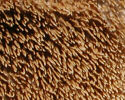 | |
Pored brackets, the polyporesCap has pores underneath. Pores can be round, angular, radially elongated, or gill-like. Fungi with cap. Stem absent or present. Often growing on wood, some growing on the ground or from buried roots. If stem present and fungus not growing on wood, then fungus is tough, leathery to woody, not fleshy. |
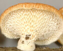 | |
Crusts, parchment fungiUnderside smooth, wrinkled, veined, bumpy. Fungi with or without cap. Most are thin brackets or crusts. One species has split gills. One species has crinkled gill like folds. If stem present then the cap does not have gills, pores, or teeth. Often growing on wood, some growing on the ground. |
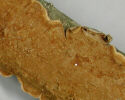 | |
Club and coral fungiFungi with slender stalks or club-shaped or branched, coral-like. See also earth tongues below. Often growing on the ground, some found on wood. |
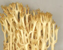 | |
Gastroid fungi: puffballs, stinkhorns, bird's nest fungi, false trufflesFungi that have spores produced within an enclosed structure. Most growing on the ground, some found on wood or wood chips. False truffles grow underground. |
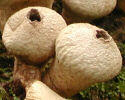 | |
Jelly fungiFungi that have a gelatinous texture. Spores produced on surface of the jelly. Most growing on wood, some found on ground or bases of plants. |
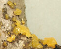 | |
| 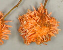 |
Rusts, smuts, bunts, and relativesFew of these fungi are currently included in vPlants. For more information see Tree of Life Web Project: Urediniomycotina and Ustilaginomycetes. |
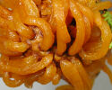 |
Division AscomycotaThe following fungi have spores produced inside an ascus (reproductive cell). |
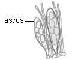 | |
Morels, saddle fungi, and cup fungi
|
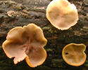 | |
Earth tongues and jelly babies
|
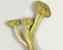 | |
| 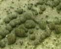 |
Flask fungi
|
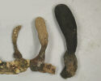 |
TrufflesTuber fungi that grow underground. |
||
Lichens and lichenized fungiThese fungi are not currently included in vPlants. |
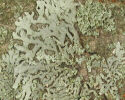 | |
Yeasts and relatives; mildews; molds, asexual fungiThese fungi are not currently included in vPlants. |
||
| The following groups are not currently included in vPlants | |
|---|---|
Division Glomeromycota, the arbuscular mycorrhizal fungiFungi forming large multinucleate spores underground. These microscopic fungi form symbiotic partnerships with the roots of most plants. For more information see Tree of Life Web Project. |
|
Division Zygomycota, the bread molds and sugar moldsFungi that have a zygosporangium (reproductive cell). Includes black bread mold. For more information see Tree of Life Web Project. |
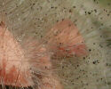 |
Division Chytridiomycota, the chytridsFungi that have zoospores (motile reproductive cells). Most are small aquatic fungi. For more information see Tree of Life Web Project. |
|
Myxomycetes, the slime moldsFungus-like protists that are related to amoebae. |
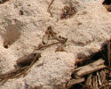 |
Oomycetes, the water moldsFungus-like protists that are related to brown algae. Includes plant pathogens such as late blight of potato. |
|
Basidium drawing by intern Dwyer Kilcollen. All other images by Patrick Leacock unless noted.